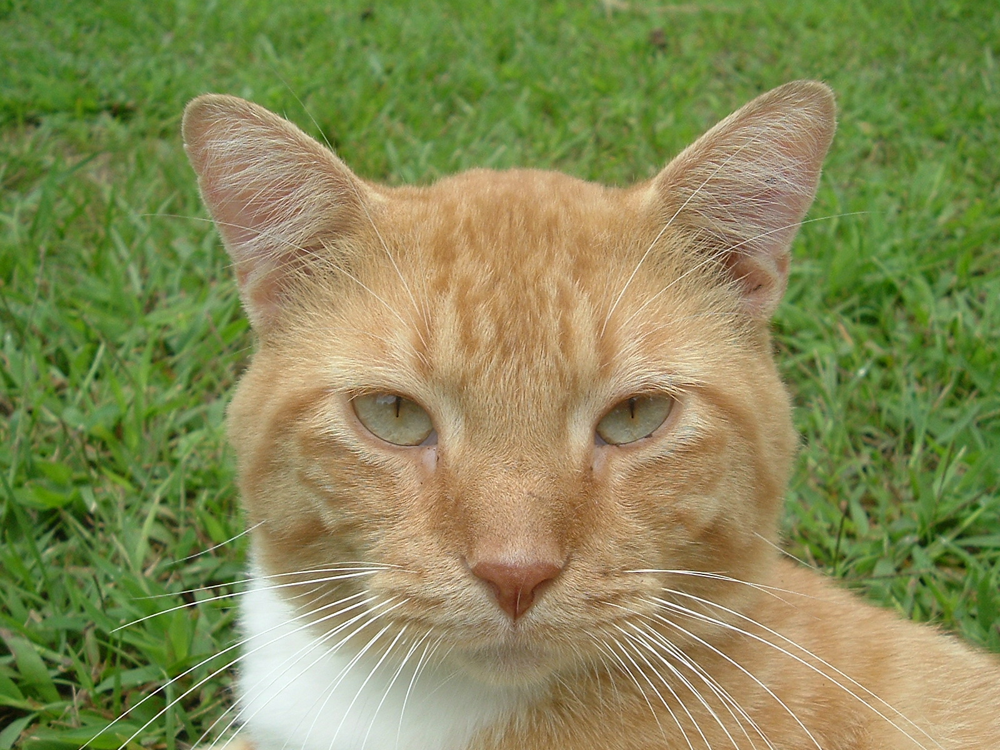

Geoffrey Hinton introduced the Forward-Forward Algorithm in 2022: it trains each layer through positive and negative forward passes with local objectives (original paper).
TL;DR
- FFA underperforms BP. The performance gap persists across vision and language tasks and becomes more pronounced as task difficulty and model scale increase.
- Failure mode 1: learning from shifting representations. Although one FFA block can be easy to optimize in isolation, earlier blocks keep changing the features received by later blocks during concurrent training.
- Failure mode 2: representation collapse. Under the analyzed kernel-product conditions, representation kernels contract toward rank one with depth. For the collapsed-goodness-gradient subclass, local error signals then become increasingly redundant.
- Design insight: preserve task-relevant directions. Local label readouts (LCE) give each block direct task supervision; spectral flattening spreads weight updates across more directions. Both narrow the measured gap to BP.
BP versus FFA
Backpropagation and Forward-Forward use the same forward computation but organize learning signals in fundamentally different ways. BP waits for the task loss, then transports one coordinated signal through the full chain rule. FFA attaches an independent contrastive objective to every layer and updates each block without gradients crossing layer boundaries.
Backpropagation
one task lossone global backward path
Forward → store · backward ← release
Forward-Forward
one objective per layerno global backward path
Positive / negative passes → local supervision
Gray with a bar means activation is stored; green ✓ means updated. Hover or focus a layer to inspect it.
Hover to preview a step; click the plot or a numbered tick to select it. Use ← or → when focused.
One cat image, two FFA passes
This supervised CIFAR-10 example uses two forward passes: cat photo + “cat” label is positive, and the same cat photo + “truck” label is negative. Here “negative” means an incorrect image–label pair, not a photograph of a truck. The photos and three-layer flow are illustrative, not actual CIFAR-10 samples or measured scores.

CAT labelSame cat image + encoded “cat” label overlay → forward through the layers
This pass contributes a loss that pushes each layer's goodness above its threshold.
Same cat image + encoded “truck” label overlay → forward through the layers
This pass contributes a loss that pushes each layer's goodness below its threshold.
Photos: cat by Halved sandwich and truck by Mattes (public domain).
Technical detail: formulations of BP and FFA
Forward inference
Let $x_i\in\mathbb R^{d^{(0)}}$ be sample $i$ and set its input representation to $h_i^{(0)}=x_i$. Suppressing the training-iteration index, the scaled residual network computes $$h_i^{(\ell)}=h_i^{(\ell-1)} +\frac{1}{L}\phi\!\left( \operatorname{LN}\!\left(W^{(\ell)}h_i^{(\ell-1)}\right) \right), \quad \ell=1,\ldots,L.$$ Thus $W^{(\ell)}\in\mathbb R^{d^{(\ell)}\times d^{(\ell-1)}}$ contains the trainable parameters of block $\ell$, while $h_i^{(\ell)}$ is the representation of the same sample after that block.
$x_i$ is one input example; different values of $i$ denote different samples.
$W^{(\ell)}$ is shared across samples and transforms the incoming features at layer $\ell$.
$h_i^{(\ell)}$ is what the network represents about sample $i$ after layer $\ell$.
At training iteration $k$, we write these quantities as $W_k^{(\ell)}$ and $h_k^{(\ell)}(x_i)$. Stacking the representations of all $N$ samples row by row gives $$H_k^{(\ell)} =\begin{bmatrix} h_k^{(\ell)}(x_1)^\top\\[-2pt] \vdots\\[-2pt] h_k^{(\ell)}(x_N)^\top \end{bmatrix}\in\mathbb R^{N\times d^{(\ell)}}$$ and $W_k=(W_k^{(1)},\ldots,W_k^{(L)})$ denotes the full network.
Backpropagation
Every layer differentiates the same end-to-end task loss:
$$g_{k,\mathrm{BP}}^{(\ell)} =\nabla_{W^{(\ell)}}\mathcal L_{\mathrm{task}}(W_k), \qquad W_{k+1}^{(\ell)} =W_k^{(\ell)}-\eta g_{k,\mathrm{BP}}^{(\ell)}.$$The chain rule lets the final task error coordinate the updates of all layers.
Forward-Forward
Block $\ell$ differentiates only its own local loss and treats the incoming representation $H_k^{(\ell-1)}$ as fixed:
$$g_{k,\mathrm{FFA}}^{(\ell)} =\nabla_{W^{(\ell)}}\mathcal L^{(\ell)} \bigl(W_k^{(\ell)};\operatorname{stopgrad}(H_k^{(\ell-1)})\bigr), \qquad W_{k+1}^{(\ell)} =W_k^{(\ell)}-\eta^{(\ell)}g_{k,\mathrm{FFA}}^{(\ell)}.$$No task gradient crosses a block boundary, so these updates are not gradient steps on one shared global objective.
FFA underperforms BP
The starting point of this work is empirical: FFA remains substantially less accurate than BP even when both are trained on the same fixed backbone and dataset. In the strictly local endpoint of our CNN12/CIFAR-10 intervention, the gap is 32.65 percentage points.
Central question. What mechanisms cause FFA to underperform backpropagation?
We answer this question by identifying two distinct but coupled failure modes: concurrent optimization on shifting representations and geometric representation collapse. The later experiments test how the gap changes with locality, model scale, and update geometry.
Two coupled failure modes
1. Learning from a moving representation
Each FFA block receives its inputs from the blocks before it. Because all blocks train at the same time, those inputs change whenever an earlier block updates. A downstream block can reduce its local loss for the current representation, only to receive a different representation at the next step. Thus, every block may make local progress without the network following one coordinated descent direction.
Why the downstream target moves
Because $\mathcal L_k^{(\ell)}(W)=\mathcal L^{(\ell)}(W;H_k^{(\ell-1)})$, layer $\ell$ is not repeatedly descending one fixed loss: every upstream update changes the loss it sees.
What this does to one local update
The gradient can be a valid descent direction for $\mathcal L_k^{(\ell)}$ without being aligned with the shifted objective $\mathcal L_{k+1}^{(\ell)}$.
The multi-layer theorem captures this interference through a linearly decaying optimization term plus a coupling residual.
Key theorem: multi-layer FFA convergence with coupling residual
Inside the paper's local regularity regime, each isolated block satisfies a PL inequality. For concurrent training, define the average local suboptimality $$V_k=\frac{1}{L}\sum_{\ell=1}^{L} \left(\mathcal L_k^{(\ell)}-\mathcal L^{(\ell)*}\right).$$ Under the boundedness, smoothness, Gram-conditioning, sensitivity, scaled-residual, and step-size conditions stated in the paper, $$V_k\le \left(1-\frac{\eta\mu_{\min}}{2}\right)^kV_0 +O\!\left(\frac{e^{2\rho}\beta_{\max}}{\mu_{\min}^2}\right).$$ The first term is the progress inherited from the local PL geometry. The second controls interference caused by simultaneous changes in upstream representations.
2. Geometric representation collapse
Representations become alike
One intuition is that each forward block can slightly reduce differences between samples' feature directions. Repeating such blocks can accumulate these small reductions, making initially distinct representations increasingly alike. Consequently, the local goodness gradients become increasingly redundant, and the network loses its ability to distinguish between classes.
Imagine comparing every pair of training images after each layer. Let $h_i^{(\ell)}$ be the representation (a.k.a. activation or feature) of sample $i$ after layer $\ell$, and let $\widetilde h_i^{(\ell)}=\operatorname{LN}(h_i^{(\ell)})$ be its normalized version. The representation kernel $\Sigma^{(\ell)}$ is the resulting $N\times N$ similarity table: entry $(i,j)$ compares images $i$ and $j$ at depth $\ell$. Using the representation matrix $H^{(\ell)}$ defined above (with the iteration index suppressed), Then $$[\Sigma^{(\ell)}]_{ij} =\frac{\langle\widetilde h_i^{(\ell)},\widetilde h_j^{(\ell)}\rangle}{d}, \qquad \Sigma^{(\ell)}\in\mathbb R^{N\times N}.$$ Intuitively, $\Sigma^{(\ell)}$ can evaluate how similar the network's representations are for different samples. In the extreme case, if all normalized representations point in the same direction, $\Sigma^{(\ell)}$ becomes the all-ones matrix $J_N$. The paper shows that this stronger contraction can happens when the specified kernel-product conditions hold. At that time, it becomes hard to distinguish between samples.
Key theorem: convergence toward the rank-one kernel
Under the kernel-product conditions (see the formal definition in the paper), if the leading Lyapunov exponent satisfies $\lambda_1<0$, then $$\left\|\Sigma^{(\ell)}-J_N\right\|_F \le \mathcal O\!\left(e^{-|\lambda_1|\ell/2}\right) \left\|\Sigma^{(0)}-J_N\right\|_F.$$ The representation kernel therefore approaches $J_N$ geometrically with depth.
Why BP can preserve distinct learning signals
Imagine that cat, dog, and truck images have almost the same features at one layer. The network gives them similar predictions, although their correct labels call for different corrections.
FFA: Each layer forms a new signal from its local goodness objective. If those activations align, their corrections also point along nearly the same line; positive and negative examples may reverse the sign, but add no new direction. This is the analyzed collapsed-gradient case, not a property of every local goodness.
BP: The final loss uses each image's label. With three classes, the resulting output errors can span more than one direction even when the predictions are nearly identical. Backward Jacobians carry these errors to earlier layers; if they preserve those directions, BP can send varied corrections despite similar current features. A Jacobian can also suppress directions, so this is a possibility rather than a guarantee.
$\Sigma$ measures similarity among the features. To see whether the corrections have also become redundant, we use their second-moment matrix $\Gamma$: effective rank near one means that most correction energy lies along one line. Effective learning capacity (ELC) sums the effective rank above this one-direction baseline across layers. It measures the diversity of available learning signals, not a guarantee of task accuracy. In this paper, we show that ELC of BP can increase with depth, while ELC of FFA can remain near one, which also explains the accuracy gap.
Technical detail: $\Gamma$, effective rank, and ELC
Let $\delta^{(\ell),\mathcal A}(x)$ be the error signal algorithm $\mathcal A$ sends to layer $\ell$. Its second-moment matrix is $$\Gamma^{(\ell),\mathcal A} =\mathbb E_x\!\left[\delta^{(\ell),\mathcal A}(x)\delta^{(\ell),\mathcal A}(x)^\top\right].$$ For a positive semidefinite matrix $M$, define $$\operatorname{erank}(M)=\frac{(\operatorname{tr}M)^2}{\operatorname{tr}(M^2)},\qquad \operatorname{ELC}(\mathcal A)=\sum_{\ell=1}^{L}\left(\operatorname{erank}(\Gamma^{(\ell),\mathcal A})-1\right).$$ Subtracting one removes the rank-one baseline at each layer. The measure does not assert that directions from different layers are mutually orthogonal.
Key theorem: effective learning capacity
Under the corresponding BP and FFA conditions established in the paper,
$$\operatorname{ELC}(\mathrm{BP})=\Omega(L), \qquad \operatorname{ELC}(\mathrm{FFA})=O(1).$$Takeaway. When representation collapse limits FFA, narrowing its gap to BP calls for preserving task-relevant differences between samples as depth grows. Two possible interventions give local learning more ways to retain those differences.
Potential repairs: richer local targets and flatter updates
Give each block a supervised readout
One route gives every block more label information: attach a trainable readout to its output and train that block with cross-entropy against the true label or next token. This is Local Cross-Entropy (LCE). Like FFA, LCE stops gradients at block boundaries, but each block now receives a task-label signal through its own readout rather than a positive/negative goodness signal. In the language-model scale sweep, each block has its own vocabulary readout; the displayed parameter counts cover the shared Transformer backbone and exclude these extra heads.
Spread each weight update across more directions
Another route changes the update geometry directly. For an update $\Delta W=U\operatorname{diag}(s_i)V^\top$, interpolate its squared singular values toward their mean: $\lambda_i(p)^2=(1-p)s_i^2+p\overline{s^2}$. This keeps the update's Frobenius norm fixed while flattening its spectrum as $p$ increases. The mechanism test below applies this rule to convolutional updates, then measures whether the error-signal spectrum $\Gamma$ and task accuracy improve.
Explore the measured evidence
The controls below expose the measured sweeps behind the headline results. In the network diagrams, orange dots mark where each block receives local supervision, while the blue dot marks the task loss at the final layer. Orange segments show separate local gradients; the blue reference shows the end-to-end BP pathway.
Vision: controlled locality intervention
The task is ten-class CIFAR-10 image classification with a fixed 12-layer convolutional network. Grouped FFA trains on true-label positive and wrong-label negative overlays; the slider changes how many contiguous layers share each local goodness objective. Architecture and training protocol stay fixed, so this sweep isolates the block partition.
CNN12 on CIFAR-10
The backbone always has 12 layers. Only the number of independently trained contiguous blocks changes.
What the diagram shows. Fewer block boundaries let each goodness signal assign credit across more of the same 12-layer backbone. From 12 local blocks to one global block, mean accuracy rises from 53.02% to 78.74%, although BP remains higher at 85.67%. The intervention links stricter locality to weaker learning on this fixed task.
| Blocks × layers | Best accuracy | Final loss | Mean erank(Γ) |
|---|---|---|---|
| 12 × 1 | 53.02 ± 0.48% | 1.1014 ± 0.0034 | 2.198 ± 0.042 |
| 6 × 2 | 58.09 ± 1.85% | 1.0455 ± 0.0068 | 5.146 ± 0.592 |
| 4 × 3 | 67.57 ± 4.35% | 1.0064 ± 0.0158 | 4.856 ± 0.552 |
| 3 × 4 | 72.22 ± 1.07% | 0.9795 ± 0.0018 | 5.135 ± 2.164 |
| 2 × 6 | 76.21 ± 0.48% | 0.9657 ± 0.0027 | 7.613 ± 3.828 |
| 1 × 12 | 78.74 ± 4.06% | 0.9550 ± 0.0199 | 7.975 ± 1.214 |
| BP | 85.67 ± 0.09% | 5.87e−5 ± 7.13e−5 | 31.654 ± 3.793 |
Measured means ± sample standard deviation over three seeds. The selected row is highlighted.
Language modeling: a scale sweep
The task is next-token prediction on an OpenWebText subset with 50 million training tokens and 0.5 million validation tokens. Decoder-only Transformers range from 2-layer Tiny to 12-layer XLarge, use GPT-2 tokenization and 256-token contexts, and are compared by validation perplexity under scale-dependent token budgets. The slider selects a model size; it does not change how a fixed model is partitioned.
Transformer pre-training on OpenWebText
For vanilla FFA, every Transformer layer is its own local block. Model depth, parameter count, and compute budget all increase across this sweep.
What the diagram shows. Vanilla FFA keeps one local objective per layer as the model grows; LCE uses the same gradient-isolated layout with cross-entropy readouts. Across the measured scales, FFA/BP perplexity grows from 3.73× to 9.19× and LCE/BP from 1.20× to 1.51×. LCE narrows the gap, but neither local method matches BP; this scale sweep does not isolate depth as the cause.
| Scale | Layers | Parameters | BP PPL | FFA PPL | LCE PPL | FFA/BP | LCE/BP |
|---|---|---|---|---|---|---|---|
| Tiny | 2 | 7M | 138 | 516 | 166 | 3.73× | 1.20× |
| Small | 4 | 16M | 68 | 313 | 84 | 4.59× | 1.22× |
| Medium | 6 | 30M | 48 | 275 | 64 | 5.74× | 1.33× |
| Large | 8 | 51M | 39 | 256 | 54 | 6.55× | 1.38× |
| XLarge | 12 | 124M | 28 | 258 | 42 | 9.19× | 1.51× |
This slider selects measured model scales. Because depth, width, parameter count, and compute change together, the trend is not a fixed-architecture causal ablation of locality.
Mechanism test: flattening the update spectrum
On CNN3/CIFAR-10, we apply the spectral interpolation described above to each convolutional update. The backbone, data, each method's objective and optimizer, and the training budget stay fixed across $p$.
CNN3 on CIFAR-10
$p=0$ is the original update; $p=1$ replaces its singular values by a flat spectrum with the same Frobenius norm.
Bars show singular values of one eight-direction example with fixed Frobenius norm. Update PR is the participation ratio of their squared values.
Points are terminal mean layerwise erank(Γ), averaged over three seeds. The highlighted point follows the slider.
The left spectrum illustrates the exact interpolation rule on an example; its bars are not measured CNN update singular values. The right plot uses the measured error-signal ranks in the table. These ranks describe different matrices.
What the plots show. Increasing $p$ spreads update energy across more directions by construction. The measured FFA error-signal rank rises overall, though not monotonically, and accuracy improves by 10.34 points from $p=0$ to $p=1$. A 21.23-point gap to BP remains at $p=1$, so flattening helps without closing the locality gap.
| Flattening $p$ | BP accuracy | FFA accuracy | BP erank(Γ) | FFA erank(Γ) |
|---|---|---|---|---|
| 0.0 | 77.56 ± 0.75% | 47.40 ± 0.98% | 42.78 ± 2.27 | 3.43 ± 0.49 |
| 0.2 | 78.80 ± 0.39% | 53.41 ± 1.25% | 50.75 ± 2.04 | 3.85 ± 0.24 |
| 0.4 | 79.08 ± 0.17% | 55.30 ± 1.21% | 53.01 ± 0.75 | 4.27 ± 0.43 |
| 0.6 | 79.11 ± 0.27% | 55.87 ± 1.65% | 53.85 ± 3.61 | 3.95 ± 0.83 |
| 0.8 | 79.13 ± 0.43% | 57.27 ± 1.15% | 50.84 ± 1.38 | 4.49 ± 0.64 |
| 1.0 | 78.97 ± 0.29% | 57.74 ± 0.50% | 44.48 ± 1.96 | 4.42 ± 0.61 |
Flattening improves FFA by 10.34 points, providing intervention evidence that update geometry matters. The remaining 21.23-point gap shows that geometry alone does not remove the cost of locality.
What should better local learning preserve?
The diagnosis suggests that improving the scalar goodness alone is not enough. A scalable local method must optimize locally without losing the distinctions needed by the global task.
- Stabilize the target seen by each block. Limit upstream drift or explicitly track it during concurrent updates.
- Allow selective cross-block communication. Even a limited global correction can coordinate otherwise independent objectives.
- Preserve diverse learning directions. Monitor representation and error-signal effective rank, not only local loss.
- Evaluate the actual task. Local convergence is an optimization diagnostic, not a substitute for downstream accuracy or perplexity.
BibTeX
@inproceedings{wu2026price,
title = {The Price of Locality: Why Forward-Forward Underperforms Backpropagation?},
author = {Wu, Zhaoxian and Liu, Haichuan and Chen, Tianyi},
booktitle = {Advances in Neural Information Processing Systems},
year = {2026},
url = {https://arxiv.org/abs/2609.33240}
}